Materiais sustentáveis
Desenvolvemos e avaliamos compósitos avançados e materiais cimentícios de baixo carbono para aumentar o desempenho e a durabilidade, reduzindo impactos ambientais e consumo de recursos.
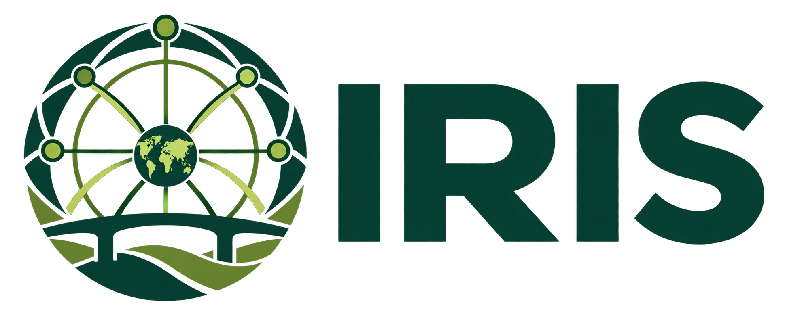
Rede Global em Infraestrutura Resiliente, Inovadora e Sustentável
A rede IRIS reúne pesquisadores acadêmicos e parceiros industriais em uma cooperação dedicada à pesquisa e ao desenvolvimento de soluções inovadoras e sustentáveis para tornar as infraestruturas mais resilientes aos desafios contemporâneos, como as mudanças climáticas, o envelhecimento das estruturas e as crescentes demandas urbanas.
Conheça a rede ↗Explore oportunidades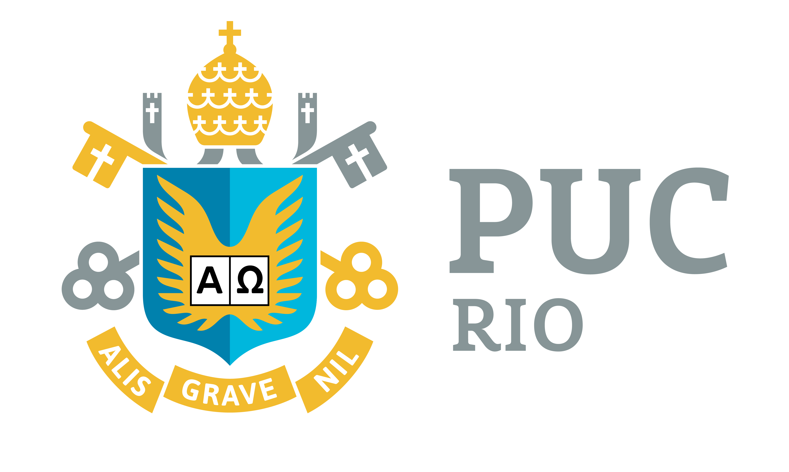
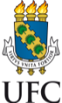
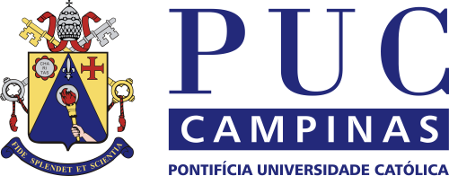
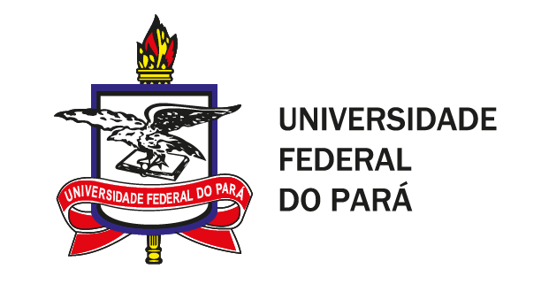
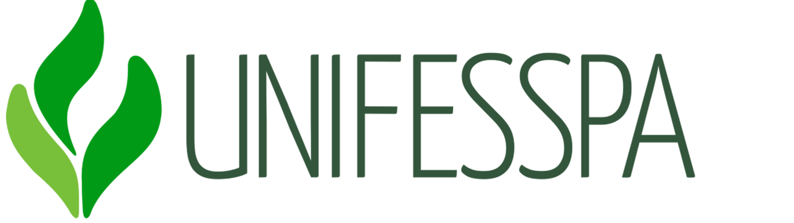
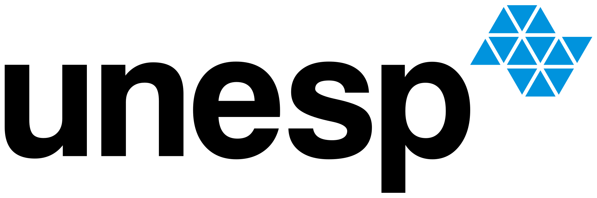
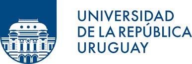
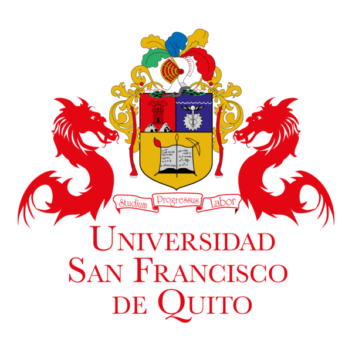
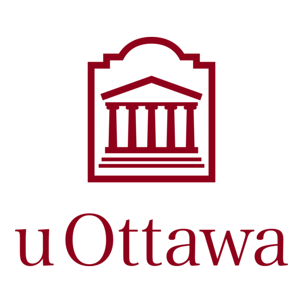
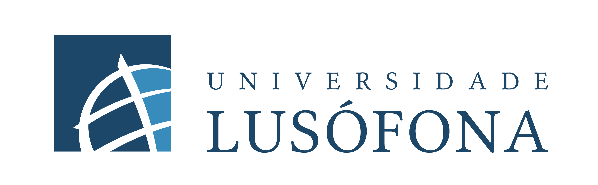
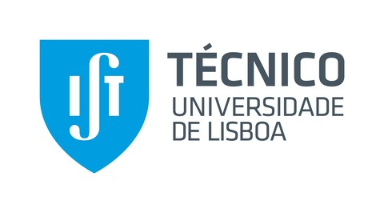
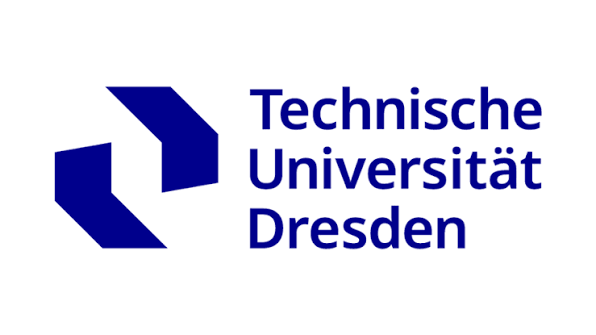
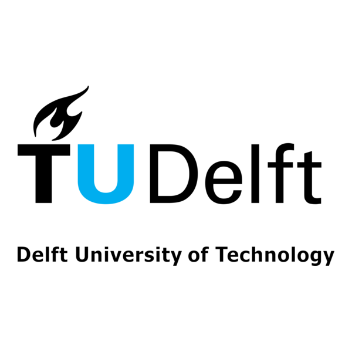
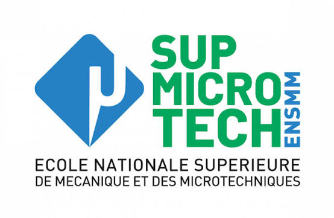
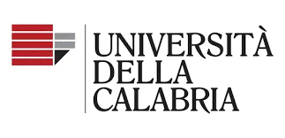
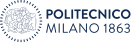
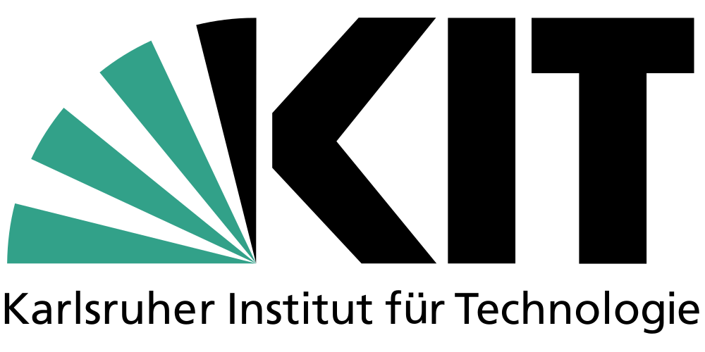
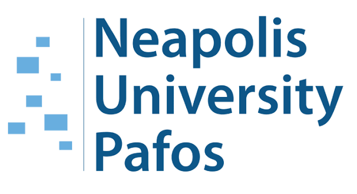
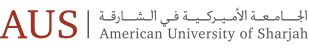
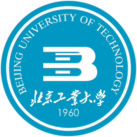
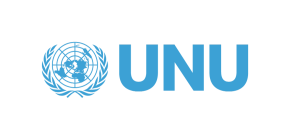
A pesquisa da IRIS está organizada em três eixos complementares: Materiais, Estruturas e Monitoramento. Em conjunto, eles articulam inovação em materiais, projeto estrutural robusto e avaliação orientada por dados para melhorar o desempenho e prolongar a vida útil das infraestruturas.
Desenvolvemos e avaliamos compósitos avançados e materiais cimentícios de baixo carbono para aumentar o desempenho e a durabilidade, reduzindo impactos ambientais e consumo de recursos.
Modelamos, otimizamos e reforçamos infraestruturas para resistir a cargas extremas e riscos associados ao clima, ampliando sua resiliência e vida útil.
Combinamos sensoriamento, análise de dados, inteligência artificial e gêmeos digitais para avaliar as condições estruturais, detectar danos e orientar a manutenção.
A rede foi aprovada no âmbito da Chamada MCTI/CNPq nº 16/2025, conectando pesquisadores em infraestrutura resiliente, inovadora e sustentável.
Leia mais →14 e 15 de dezembro de 2026 · PUC-Rio. Pesquisadores e estudantes estão convidados a participar presencialmente do workshop de lançamento do IRIS. A programação preliminar inclui palestras, sessão de pôsteres, mesa-redonda sobre desafios climáticos e minicursos.
Leia mais →14 e 15 de dezembro de 2026, na PUC-Rio. Palestras, pôsteres e minicursos de SHM e DEWESoft. Confira a programação preliminar.
Veja a programação →Inscreva-se →Conheça nosso trabalho, explore a rede e descubra como participar.
Conheça nossa missão e a visão que orienta o IRIS.
Explore →Confira os webinários previstos e nosso workshop internacional.
Explore →Explore missões de pesquisa, formação e colaboração.
Explore →Acesse publicações, bases de dados e resultados de pesquisa conforme forem disponibilizados.
Explore →Entre em contato com a equipe IRIS.
Explore →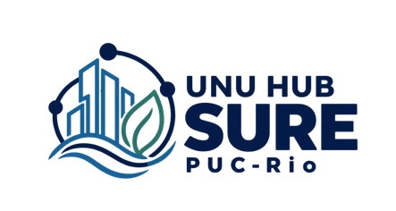